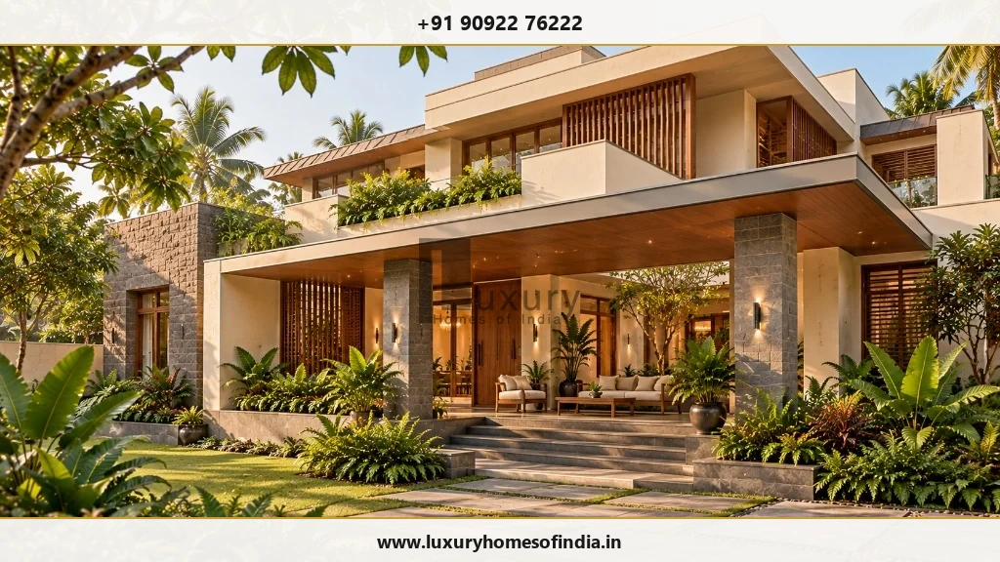
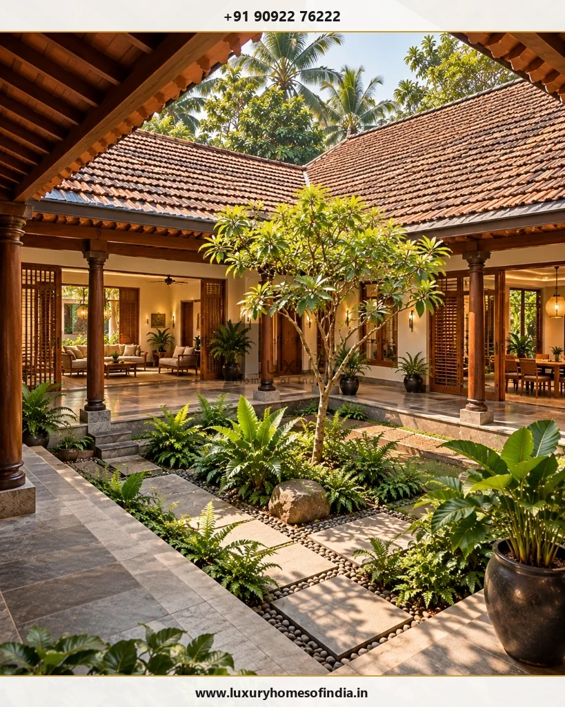

Luxury Home Architects in Chennai
Choosing an architectural partner is about finding a team that turns design ideas into a coordinated, buildable home.
Executive Summary: Selecting Luxury Architects in Chennai
Selecting luxury home architects in Chennai requires looking beyond 3D presentation renders. A successful architectural partner balances bespoke space planning, Vastu preferences, plot microclimates, and technical engineering coordination. Luxury Homes of India brings architectural design, structural engineering, and construction under a single coordinated workflow.
Start with the Way You Want to Live
A well-considered luxury home begins with a clear, lifestyle-first brief. Family routines, entertaining expectations, privacy boundaries, storage needs, and future household changes dictate how rooms should relate to one another.
Before refining an exterior elevation, ask these fundamental briefing questions:
- Public vs. Private Zoning: How should shared entertainment spaces relate to quiet family quarters?
- Acoustic & Privacy Boundaries: Which bedrooms or home offices require sound isolation or screened access?
- Daily Service Routines: How do wet kitchens, utility yards, and storage zones support daily household activities?
- Indoor-Outdoor Transitions: Where could courtyards, verandas, or balconies extend daily living spaces into nature?
- Future Adaptability: How will the home accommodate elderly family members, lift installations, or growing space needs over time?
- Vastu & Material Preferences: What directional and material preferences should guide the initial layout?
Answering these questions establishes the core purpose of your home before its physical aesthetic is developed.

What to Look for in a Luxury Home Architect
Evaluating an architectural firm for a bespoke residence in Chennai involves reviewing their experience, technical depth, and proposal transparency.
1. Relevant Residential Project Experience
Review completed projects that match your target scale and scope. Distinguish between conceptual 3D renders and completed built residences. Inquire about the firm's specific responsibilities during design development and site construction.
2. Design Reasoning Over Visual Renders
A capable architect explains the practical logic behind spatial decisions: why rooms face specific directions, how privacy is maintained against neighboring plots, and how the building mitigates Chennai's solar heat gain.
3. Seamless Engineering & Interior Coordination
Architecture cannot exist in isolation from structural engineering, HVAC ducting, plumbing lines, or interior joinery. Ensure your design team has a proven framework for coordinating architectural drawings with engineering consultants.
4. Transparent Scope & Clear Deliverables
Before signing an appointment agreement, confirm exact drawing stages, 3D visualization limits, revision allowances, consultant management, and construction-stage site supervision frequency.
Architectural Design & Planning Services with LHI
Luxury Homes of India (LHI) offers comprehensive residential architectural design, space planning, and structural coordination tailored for luxury villas and custom residences in Chennai.
Bespoke Space Planning
We organize room proportions, circulation corridors, and storage areas around your family's specific lifestyle priorities. The goal is to maximize spatial efficiency and comfort rather than relying on bloated floor areas.
Architectural Character & Façade Development
We develop building proportions, window openings, shading louvers, and material palettes into a cohesive architectural statement that reflects the spaces behind it.
Vastu-Aligned Architectural Layouts
Vastu principles are integrated at the initial sketch phase, harmonizing directional orientations with plot geometry, natural ventilation, and structural grid efficiency.
Indoor-Outdoor Courtyard Connections
Verandas, central courtyards, and landscaped terraces extend living areas while providing microclimatic cooling and visual connection to greenery.

Design Tailored to Your Chennai Plot
Site conditions dictate spatial orientation, building massing, and technical engineering decisions.
Solar Orientation & Passive Climate Shading
Balancing natural daylight with solar heat defense requires strategic window placement, cantilevered eaves, jaali screens, and high-performance double-glazed glass.
Plot Context & Neighboring Privacy
Analyzing road frontage, adjacent building heights, and overlooking views ensures living rooms, master bedrooms, and swimming pools remain private.
Circulation, Access & Parking
Integrating grand entrance gates, visitor parking, family garage access, and internal stairwells seamlessly into the floor plan layout.
Monsoon Drainage & Site Levels
Coordinating roof gutters, terrace falls, sub-surface drainage, and rainwater harvesting sumps prevents water logging during heavy northeast monsoons.
Architectural Decision Matrix: Concept to Execution
| Design Question | What to Resolve | Technical & Architectural Deliverable |
|---|---|---|
| Spatial Character | Proportions, ceiling heights, material palette | Mood boards, 3D visualization renders, sample boards. |
| Functional Layout | Room adjacencies, circulation, privacy, Vastu | Dimensioned floor plans, furniture layouts, Vastu grid overlay. |
| Site Response | Solar orientation, setback rules, view corridors | Master site plan, solar shading analysis, landscape levels. |
| Structural Integration | Column positions, transfer beams, cantilevers | Coordinated RCC structural framing drawings & calculations. |
| MEP Building Services | Electrical conduits, plumbing stacks, AC ducting | Integrated MEP reflected ceiling and floor layout plans. |
Questions to Settle Before Appointing Your Design Team
- Lead Architect Credentials: Who will directly manage your design, and what professional qualifications apply?
- Deliverable Schedule: What specific drawings, elevations, structural plans, and 3D renders are included?
- Revision Limits: How many design review stages and plan revisions are covered in the base fee?
- Engineering Coordination: Who takes responsibility for structural framing, electrical layouts, and plumbing coordination?
- Construction Supervision: Are periodic site quality audits included during foundation, RCC casting, and finishing stages?
Give Your Home a Clear Architectural Direction
Bring your plot details, lifestyle goals, and budget expectations. Schedule an architectural brief consultation with Luxury Homes of India today.